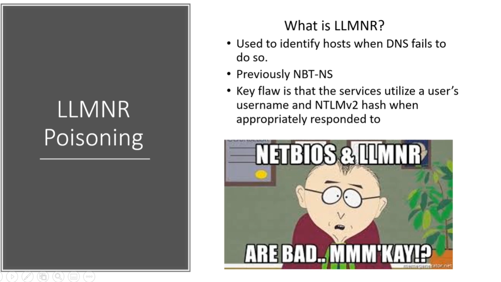

So what is LLMNR ?_?
link local multicast name resolution


The server Name is Hackme and the user by mistake writes hackm which caused a DNS issue
So will send a broadcast message if anyone knows about it. And we who are listening in the network (i.e. Man In The Middle Attack)
So this is what LLMNR is we are listening in the middle and the request happens we are just waiting for a response to happen (i.e. user name and hash)
Will run a tool called RESPONDER
Responder is a part of IMPACKET tool kit.
Mentor's Strategy:
Always run this tool first in the morning or right after lunch Cuz as u need a lot of traffic (i.e. Start this before any Nmap scans or Nessus etc....)
Running Responder :

After running responder an event occures : Somebody entered a wrong network drive (i.e. Failed to do DNS)

And when the event occurs this is what we will get: after we get this hash will try to crack it.

Will use a tool called Hashcat. The more powerful Graphic Card we have the more fast will be able to crack the password.
So where-ever we go to work they will have a Password Rigs to do this task.